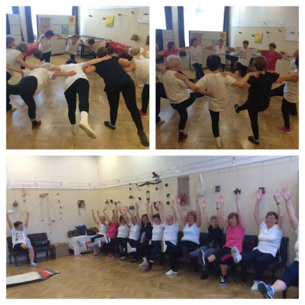

Az egyik fő célom, hogy a hozzám hasonló emberek, akik sosem akartak jógázni azok is megismerhessék ezt a több ezer éves tudást 21. századi köntösbe öltöztetve.

2017
2016
2015
2013
2012
2011

Jóga Flow, Adzsna központ
hétfő,péntek 19:00-20:00
1151 Károlyi Sándor út 148.
Senior Torna, Újpalotai KH
szerda,péntek 10:00-11:00
1157 Zsókavár u 15.
Aerial Jóga, Bandha Jóga
csütörtök 18:00-19:00 és 19:00-20:00
1042 Árpád út 77.
fekete.timea92@gmail.com
+36202584643